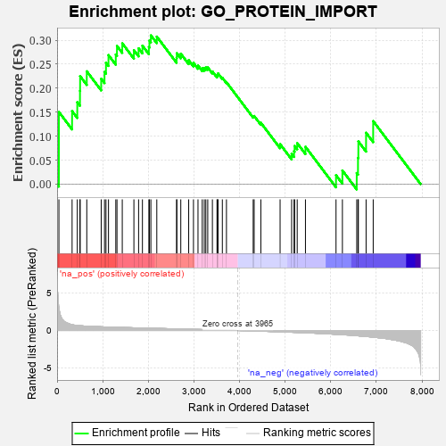
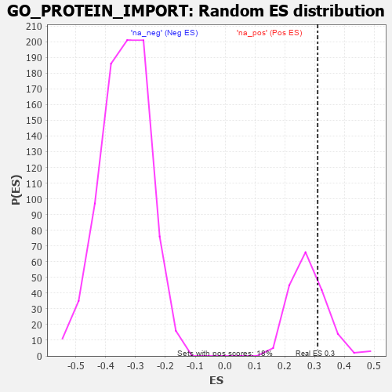

| | | Dataset | 7d |
| Phenotype | NoPhenotypeAvailable |
| Upregulated in class | na_pos |
| GeneSet | GO_PROTEIN_IMPORT |
| Enrichment Score (ES) | 0.31012517 |
| Normalized Enrichment Score (NES) | 1.1127831 |
| Nominal p-value | 0.26553673 |
| FDR q-value | 0.5915289 |
| FWER p-Value | 1.0 |
Table: GSEA Results Summary

Fig 1: Enrichment plot: GO_PROTEIN_IMPORT
Profile of the Running ES Score & Positions of GeneSet Members on the Rank Ordered List
| PROBE | GENE SYMBOL | GENE_TITLE | RANK IN GENE LIST | RANK METRIC SCORE | RUNNING ES | CORE ENRICHMENT | | 1 | SIX2 | | | 40 | 3.152 | 0.1505 | Yes |
| 2 | NUP85 | | | 329 | 0.772 | 0.1522 | Yes |
| 3 | SUFU | | | 443 | 0.665 | 0.1707 | Yes |
| 4 | NXT2 | | | 502 | 0.628 | 0.1944 | Yes |
| 5 | NUP54 | | | 505 | 0.627 | 0.2251 | Yes |
| 6 | TNPO3 | | | 651 | 0.576 | 0.2352 | Yes |
| 7 | ZPR1 | | | 967 | 0.491 | 0.2196 | Yes |
| 8 | AKT1 | | | 1040 | 0.476 | 0.2340 | Yes |
| 9 | AIFM1 | | | 1072 | 0.469 | 0.2532 | Yes |
| 10 | NUP93 | | | 1127 | 0.459 | 0.2690 | Yes |
| 11 | PEX3 | | | 1287 | 0.432 | 0.2703 | Yes |
| 12 | PEX5 | | | 1313 | 0.427 | 0.2882 | Yes |
| 13 | NUP88 | | | 1429 | 0.404 | 0.2936 | Yes |
| 14 | TNPO1 | | | 1684 | 0.359 | 0.2792 | Yes |
| 15 | NUP58 | | | 1787 | 0.340 | 0.2831 | Yes |
| 16 | NUP62 | | | 1871 | 0.324 | 0.2886 | Yes |
| 17 | DNLZ | | | 2012 | 0.303 | 0.2859 | Yes |
| 18 | DMAP1 | | | 2025 | 0.301 | 0.2992 | Yes |
| 19 | PEX2 | | | 2056 | 0.298 | 0.3101 | Yes |
| 20 | SYK | | | 2186 | 0.278 | 0.3076 | No |
| 21 | BAG3 | | | 2620 | 0.209 | 0.2632 | No |
| 22 | NUP50 | | | 2625 | 0.209 | 0.2730 | No |
| 23 | PHB2 | | | 2712 | 0.197 | 0.2719 | No |
| 24 | PDCD5 | | | 2885 | 0.169 | 0.2585 | No |
| 25 | PEX1 | | | 2990 | 0.151 | 0.2528 | No |
| 26 | CHP1 | | | 3089 | 0.138 | 0.2472 | No |
| 27 | RBM22 | | | 3182 | 0.125 | 0.2418 | No |
| 28 | PEX10 | | | 3227 | 0.117 | 0.2420 | No |
| 29 | NUP98 | | | 3261 | 0.112 | 0.2434 | No |
| 30 | SMAD3 | | | 3303 | 0.105 | 0.2433 | No |
| 31 | MED1 | | | 3405 | 0.089 | 0.2350 | No |
| 32 | UFM1 | | | 3506 | 0.077 | 0.2261 | No |
| 33 | UBR5 | | | 3518 | 0.074 | 0.2284 | No |
| 34 | HDAC3 | | | 3528 | 0.072 | 0.2308 | No |
| 35 | NOLC1 | | | 3623 | 0.056 | 0.2217 | No |
| 36 | NF1 | | | 3713 | 0.040 | 0.2125 | No |
| 37 | RAN | | | 4299 | -0.059 | 0.1415 | No |
| 38 | ROMO1 | | | 4320 | -0.063 | 0.1421 | No |
| 39 | LRRK2 | | | 4467 | -0.087 | 0.1280 | No |
| 40 | CLU | | | 4889 | -0.174 | 0.0835 | No |
| 41 | IPO7 | | | 5142 | -0.236 | 0.0633 | No |
| 42 | SMO | | | 5195 | -0.247 | 0.0689 | No |
| 43 | IPO5 | | | 5207 | -0.248 | 0.0797 | No |
| 44 | CDK1 | | | 5264 | -0.262 | 0.0856 | No |
| 45 | CBLB | | | 5445 | -0.306 | 0.0779 | No |
| 46 | PEX12 | | | 6115 | -0.510 | 0.0186 | No |
| 47 | PEX13 | | | 6255 | -0.557 | 0.0285 | No |
| 48 | PEX19 | | | 6569 | -0.693 | 0.0232 | No |
| 49 | TPR | | | 6597 | -0.709 | 0.0548 | No |
| 50 | PEX6 | | | 6605 | -0.713 | 0.0891 | No |
| 51 | NXT1 | | | 6774 | -0.797 | 0.1072 | No |
| 52 | SNX33 | | | 6930 | -0.888 | 0.1314 | No |
Table: GSEA details [plain text format]

Fig 2: GO_PROTEIN_IMPORT: Random ES distribution
Gene set null distribution of ES for GO_PROTEIN_IMPORT